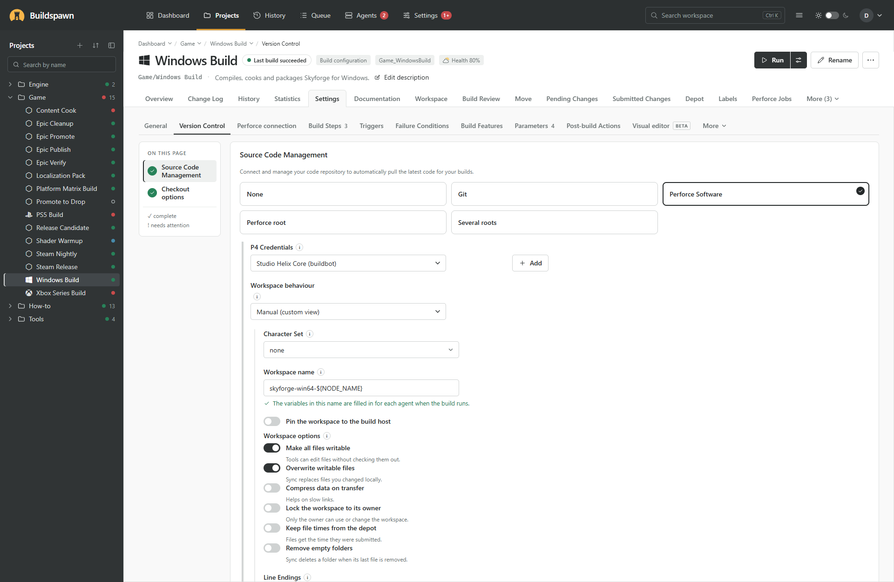

Perforce Software
The version control choice that defines a Perforce workspace inside one build configuration: credential, workspace type, sync options and polling filters.
When to use it
Choose Perforce Software when one build configuration needs its own workspace settings that no other build configuration shares. If several build configurations use the same depot, use a Perforce root instead: you change it in one place.
How to set it up
- Open the build configuration and go to Settings › Version Control.
- Choose Perforce Software.
- Under P4 Credentials, pick a connection, or click Add.
- Choose Workspace behaviour and fill in its fields.
- Choose Populate options.
- Optionally add Polling build filters (Add new build filter).
- Click Save.

Workspace behaviour
| Choice | Use it when |
|---|---|
| Manual (custom view) | You write the view yourself. An existing workspace is updated, or a new one made. |
| Spec File (load workspace spec from file in Perforce) | A workspace spec is kept as a file in the depot. |
| Static (static view, controller only) | You use a workspace that already exists and has a valid view. |
| Streams (view generated by Perforce for each node) | Your depot uses streams. Buildspawn makes or updates the workspace from the stream. |
| Template (view generated for each node) | You copy the view of an existing workspace for each agent. |
All five have Character Set (use none unless the server is in Unicode mode) and Pin the workspace to the build host (the workspace is tied to the machine the build runs on).
| Choice | Fields |
|---|---|
| Manual | Workspace name (a name with ${NODE_NAME} in it, so each agent has its own), then the workspace spec fields below. |
| Spec File | Workspace name and Depot path for workspace spec, for example //spec/clients/skyforge-ws.p4s#3. The spec must match the workspace name. |
| Static | Workspace name of the existing workspace. |
| Streams | Stream Codeline (for example //skyforge/main), Stream at change (builds the view from the stream spec at or before this changelist, optional) and Workspace Name Format. |
| Template | Template workspace (the existing workspace to copy) and Workspace Name Format. |
Workspace Name Format must hold at least one variable, such as ${NODE_NAME} or ${JOB_NAME}, because every agent needs its own workspace.
Workspace spec fields (Manual)
| Field | What it does | Default |
|---|---|---|
| Workspace options | Switches: Make all files writable, Overwrite writable files, Compress data on transfer, Lock the workspace to its owner, Keep file times from the depot, Remove empty folders. | Overwrite writable files on |
| Line Endings | Default, Unix, Windows, Mac or Shared. | Default |
| Type | Normal (writable), Graph depot, Read only or Partitioned. Read-only workspaces have their own have-list table, which keeps long-lived build workspaces fast, but cannot edit or submit. | Normal |
| Stream, Stream at change | Dedicate the workspace to a stream. The view is then replaced by the stream's view. | |
| View Mappings | The View Mappings editor. Use ${P4_CLIENT} for the workspace name. | |
| Change View | Restricts depot paths to a point in time, such as //depot/path/...@1000. | |
| Limit View | Restricts the paths of the view, useful for streams. Exclusions start with -. | |
| Server ID | Restricts use to the named server. Empty allows the main server and replicas other than edge servers. | |
| Backup Client | Whether the workspace is part of the server's backup. | On |
| Custom Polling Path | Extra depot paths outside the view to poll, separated by commas, at most 10. A change there starts a build. Build once after saving. | Off |
Populate options
These decide how the workspace is cleaned and filled at the start of a build.
| Choice | What it does |
|---|---|
| Auto cleanup and sync | Removes files that are not in the depot, restores missing and changed files, then syncs. Best for clean builds. |
| Sync only | Syncs without cleaning. Files are overwritten because of clobber. Best for incremental builds. |
| Forced clean and sync | Removes all files under the workspace root, then force syncs. Slow, and not recommended. |
| Graph force clean and sync | The same for Graph and Hybrid workspaces. |
| Flush workspace | No files are synced or removed, but the have list is updated (p4 sync -k). |
| Preview check Only | Nothing is synced and the have list is not updated (p4 sync -n). |
| Setting | What it does | Default |
|---|---|---|
| REPLACE missing/modified files (Auto cleanup) | Overwrites depot files that are missing or changed locally. | On |
| DELETE generated files (Auto cleanup) | Deletes local files that are not in the depot. | On |
| Sync with MODTIME (Auto cleanup) | Keeps file modification times. | Off |
| QUIET P4 messages | Adds -q to the Perforce commands. A summary still shows. | On for Auto cleanup |
| Clean up Review actions | Removes review actions a review build left. | Off |
| Pin build at P4 Label | Syncs only to this label. A variable such as ${VAR} works. now means the latest change. | Empty |
| Parallel sync (advanced): Enabled, Threads, Minimum Files, Minimum Bytes | Transfers files in parallel, which is a big gain on large game depots. | Off; 4 threads, 1 file, 1024 bytes |
Polling build filters
Filters decide which changes start a build when the build configuration polls.
| Filter | What it does |
|---|---|
| Polling latest change | Builds the latest change only. |
| Polling latest change with pin | With a pinned checkout, polling ignores the pin and follows the latest change. |
| Polling per change | Builds one change at a time, the oldest. Set P4_INCREMENTAL to false to build all. |
| Exclude changes from Depot path | A change is skipped if all its files are under this path. |
| Exclude changes outside Java pattern | A change is skipped if none of its files matches a regular expression (one per line), for example //depot/main/src/.*\.cpp. |
| Exclude changes from user | A change is skipped if its owner is this user. Use it to ignore the build's own submits. |
| Exclude changes outside view mask | A change is skipped if none of its files is in the mask. Lines starting with - exclude. |
A worked example
| P4 Credentials | Studio Helix Core (buildbot) |
| Workspace behaviour | Streams: Stream Codeline //skyforge/main, Workspace Name Format skyforge-${NODE_NAME} |
| Populate options | Auto cleanup and sync, Parallel sync on with 8 threads |
| Polling build filters | Exclude changes from user buildbot |
What you see when it runs
The build log shows the workspace update and the sync. The build page shows the changelist, and the Changes tab lists the changelists since the last build.
Problems and fixes
| You see | What to do |
|---|---|
| Two agents fight over one workspace | Put ${NODE_NAME} in the workspace name or format. |
| Build output is still there after a sync | Use Auto cleanup and sync with DELETE generated files on. |
| The sync fails with a password error | Update the connection. |